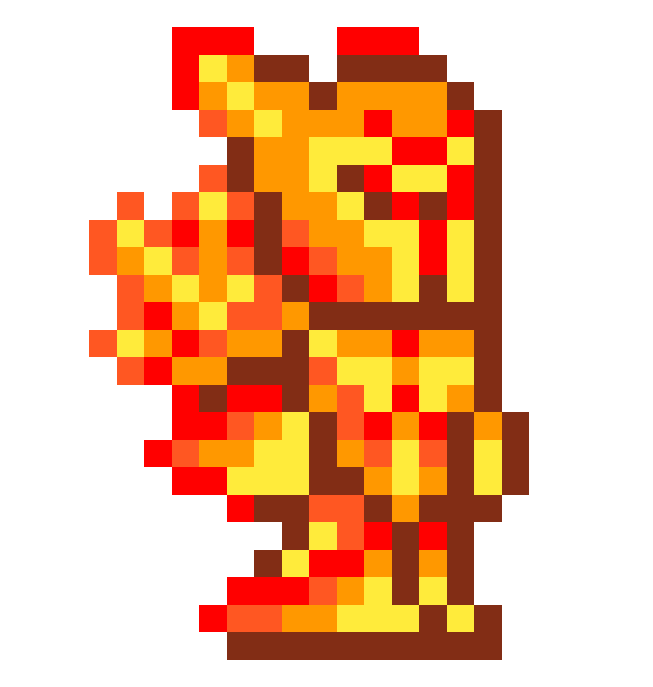
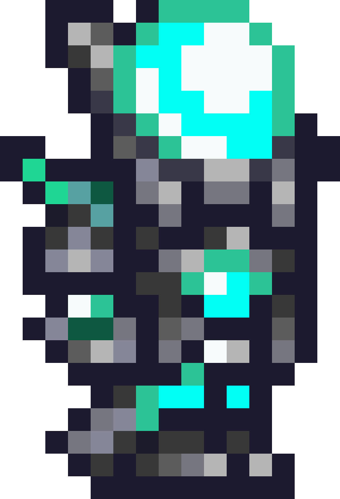
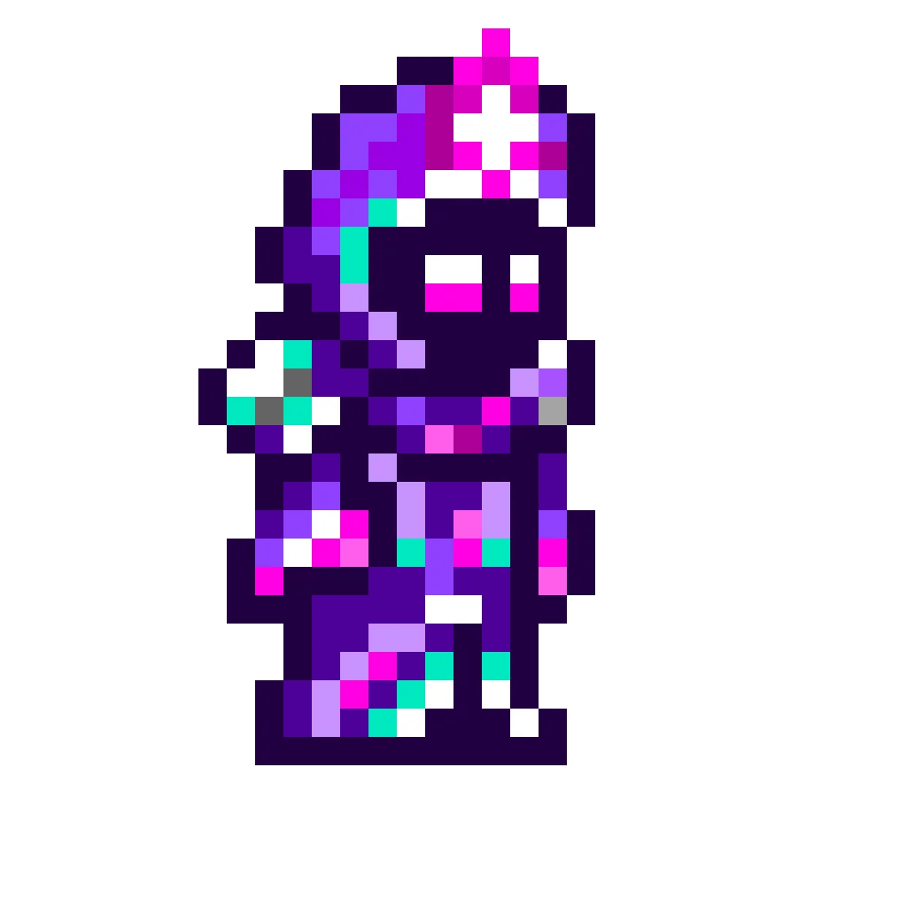
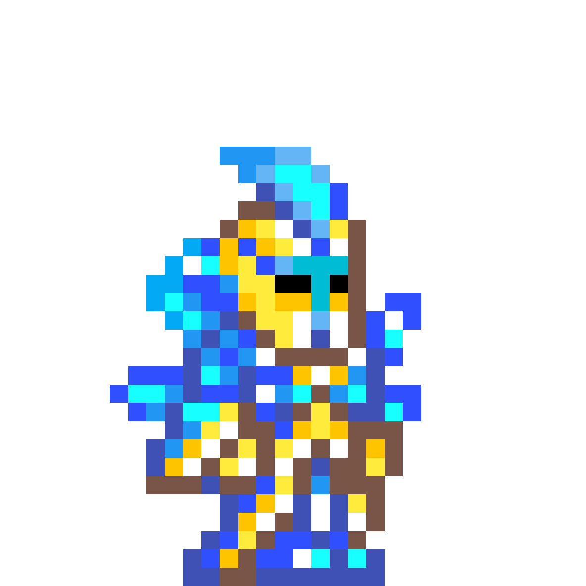

The melee class is the tankiest of all the classes. Like the name suggest the melee class prefers to keep things up close and personal, they utilize weapons such as swords, spears, yoyos, flails, boomerangs, and many other weapons.
The ranged class is a class that utilizes weapons such as bows and guns. The ranged class, unlike the other classes, has to craft not only the weapon but also the ammo (arrows and bullets) in order to use their weapon.
The magic class has the lowest defence overall of the classes. The magic class makes use of weapons such as books, staffs, and many other wacky items. when a magic weapon is used then mana is drained from the user.
The summon class is a class that mainly relies on its minions to do the bulk of the damage. summoners mainly use staffs of summoning to summon their minions and whips so that whatever they hit with their whip their minions will attack. A summoner can increase the amount of minions he controls by equipping certain acessories and armors